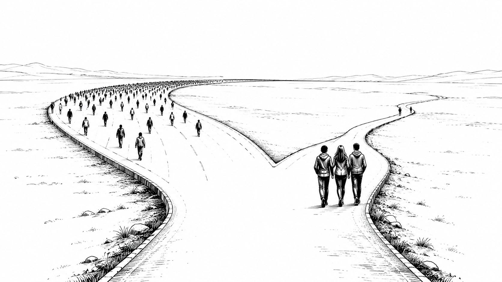
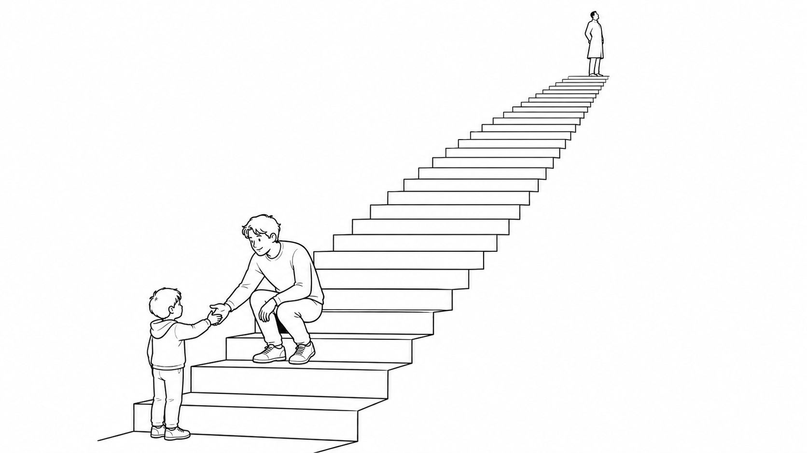
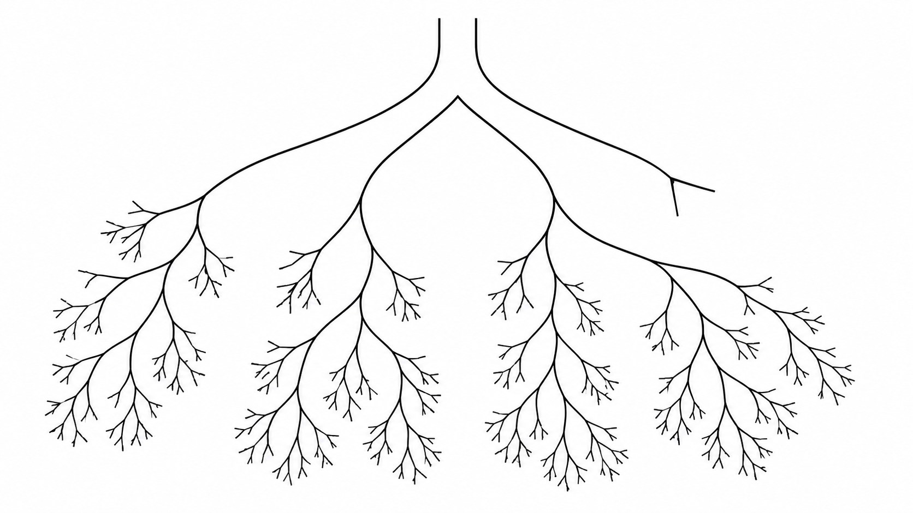
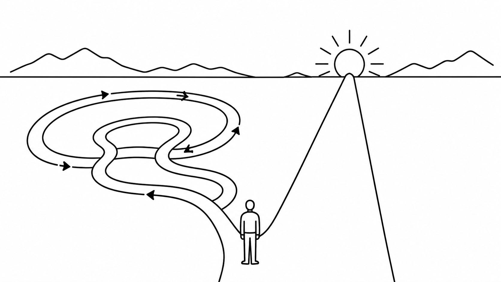
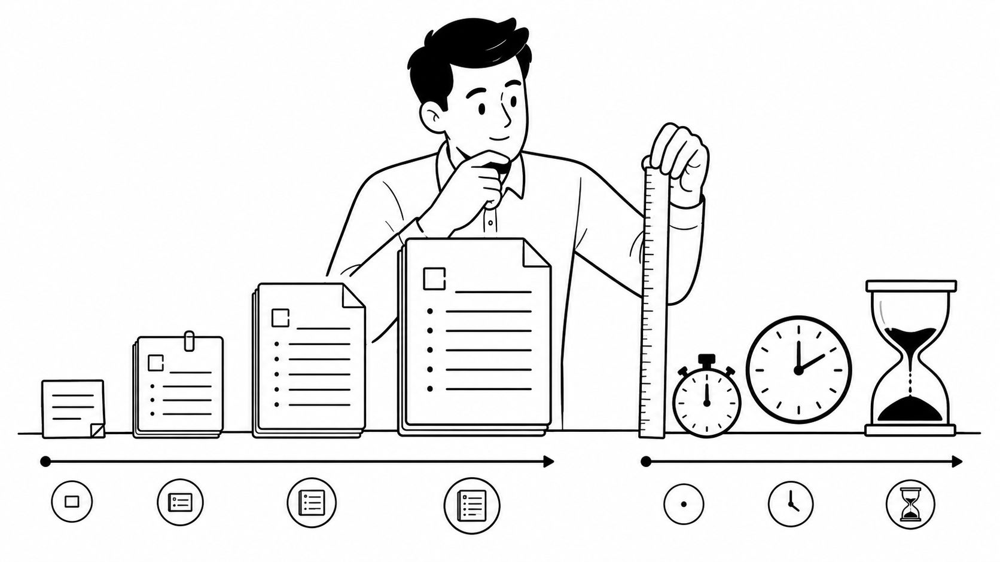
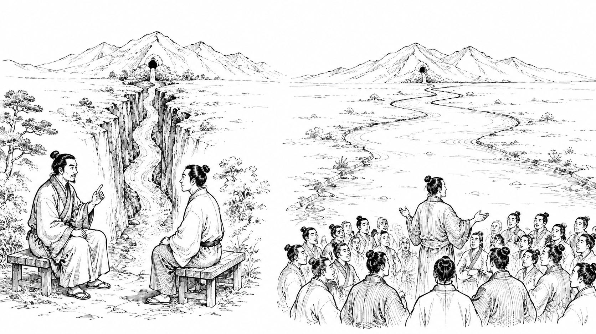

行動経済学 × SNSビジネスの視点で、売れる「考え方の型」を綴ります。

コラム100本目。「なぜ先のことが分かるんですか？」とよく聞かれますが、予知能力ではありません。原理原則から逆算しているだけ。最新テクニックを追う前に、舞台が変わっても使える「考え方の土台」を——強いポケモンより、強いトレーナーを育てる話です。

SNSの売り上げは「母数 × 率」の2変数。フォロワーを増やす戦略と、率を上げる戦略。どちらを選ぶかで発信内容は全然変わります。専門知識がつくと本質を発信したくなりますが、そこには「知識の呪い」という落とし穴が——行動経済学から発信戦略を設計する話です。

「専門家ポジション」と「先輩ポジション」——同じ発信でも、人がお金を払う理由はまったく違います。情報の非対称性 vs 共感の対称性という視点で、商品と発信を噛み合わせるポジション設計を、行動経済アナリストが解説します。

「コンセプトを絞れ」は正しい。でも、その言葉だけを真に受けると、真面目な人ほど“地下室”まで降りて詰みます。チャンクという考え方で、5年後も発信と商品を増やし続けられるコンセプト設計のしかたを解説します。

「やりたいことで生きていく」と言いながら、やるべきことを回避している——その構造を行動経済学の「現在バイアス」で解説。ロゴ・デザイン・界隈渡りに逃げる失敗パターンと、正しい順番を、行動経済アナリストが整理します。

タスクの処理時間を「2分以内・15〜30分・60分以上」の3段階に分けるだけで、1日の密度が変わります。GTDの2分ルールとアイゼンハワーを組み合わせた、SNS起業家向けの実践法。KSF・アイゼンハワーに続く3本シリーズの最終回です。
Zoomでのオファーは、SNSで広まる「セールス手法」でも特商法の「電話勧誘販売」にあたる可能性があります。プロが教えていても、法律は別物。知らないまま実践するリスクと、安全にするための5つのポイントを、行動経済アナリストが解説します。
ペルソナ設定を「販売目的」でやると、集客に追われ続けます。理想の顧客からの“感謝の手紙”を書くことで、やるべきことが逆算でき、顧客満足の再現性が生まれる——長く続くペルソナの作り方を、行動経済アナリストが解説します。
初心者が陥りやすい「ブランディング先行」の罠。選ばれる理由（商品設計）なしに認知活動をしても売上は動きません。「選ばれる理由」と「思い出される理由」の正しい順番を、行動経済アナリストが解説します。
タスクをこなすだけで前に進めない原因は「緊急と重要の混同」。アイゼンハワーマトリクスを使って、SNSビジネスの優先順位を正しく設定する方法を、行動経済アナリストが解説します。前回のKSF（重要成功要因）の続編です。
やることはやっているのに前に進まない——その原因は、頑張り不足ではなくKSF（重要成功要因）が決まっていないこと。SNSビジネスのどこが“詰まっている”かを特定し、行動を正しい方向に集中させる方法を、行動経済アナリストが解説します。

SNSマーケのノウハウが矛盾して見えるのは、源流が Brunson と Hormozi の2つあるから。どちらが正しいかではなく、自分が「話すと伝わる型」か「見せて惹きつける型」か——2つのタイプと2つの戦略を、行動経済アナリストが整理します。